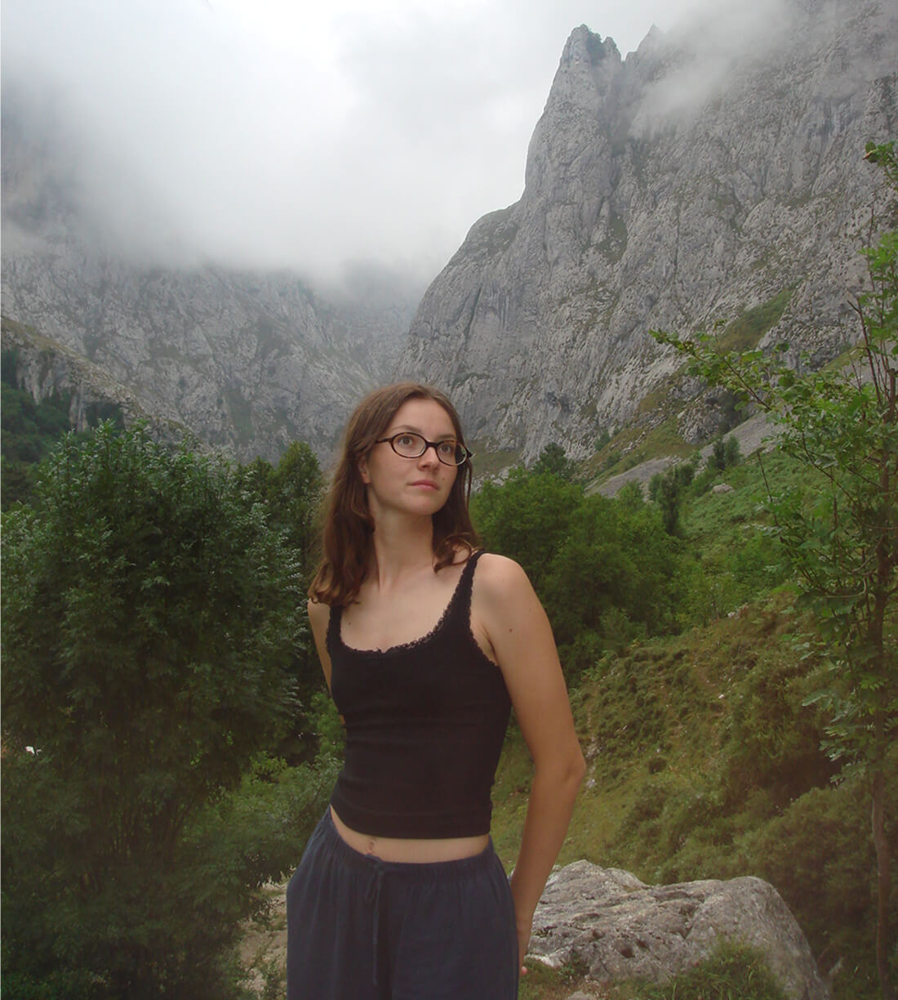

Hi!
My name is Alice Spanninga, I'm studying design at the University of Barcelona.
I'm currently in my third year of the degree. And I love industrial design, graphic design, and craftsmanship. I'm constantly exploring how creativity can connect with functionality.
I created this place to save and share my projects in a personal way, outside of social media and with my own rules.
In this website you can see some of my favorite works, there are university, competition and personal projects.
And here you can find me in other places on the internet, where I share my work and my thoughts:
- Instagram: @alice_.dsg
- Behance: Alice Spanninga
- Substack: @alicespanninga
- Pinterest: @aspanfort
- Email:
Final update August 2026
